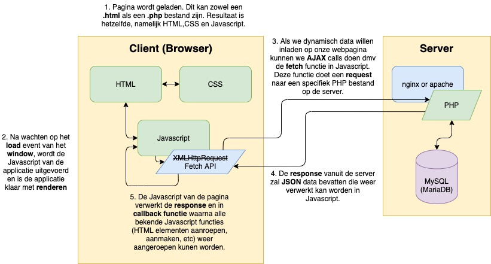

Functions, DOM manipulatie, Events en verschillende Web API's, als het goed is heb je de basis van deze onderdelen goed onder de knie. Goed bezig! Mocht je toch het gevoel hebben dat je nog zoekende bent is er niks aan de hand. Je kunt alle oefeningen vaker nalezen, mee oefenen en uiteraard toepassen in je eindopdracht.
We zijn aangekomen bij het laatste onderwerp wat je onder de knie moet krijgen: AJAX. Voor de een iets wat refereert aan mooi verzorgd voetbal, voor de ander de aartsvijand. Beide perspectieven hebben echter niks te maken met de techniek die we gaan bespreken, namelijk asynchrone communicatie met een externe webservice vanuit Javascript.
Het protocol wordt helder uitgelegd op onderstaande afbeelding waar de bekende onderdelen zijn benoemd en met elkaar zijn verbonden. De server kan van alles zijn. Een externe service zoals de Pokémon API, of je eigen webservice die we in week 1 hebben klaargezet met PHP.
In dit model is het belangrijk te snappen dat de server hier GEEN HTML teruggeeft zoals je tijdens Programmeren 2 deed, maar JSON zoals we in Les 1 van deze module hebben gezien. Laten we gaan starten in de volgende opdracht om meer grip te krijgen over het onderwerp!

PS: Het plaatje staat ook in de map als je hem groter wilt bekijken.